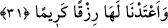
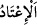

31. Sizden kim, Allâh’a ve Rasûlü’ne itâat eder ve yararlı iş yaparsa ona
mükâfâtını iki kat veririz. Ve ona (cennette) bol rızık hazırlamışızdır.
“Sizden” siz peygamber hanımlarından her “kim, Allâh’a ve Rasûlüne itâat”e devam
“eder ve yararlı” sâlih, beğenilen “iş yaparsa ona mükâfatını” birisi onların tâat ve
takvâsına karşılık, diğeri de kanâat ve hüsn-i muâşeretle Rasûlullah (s.a.)’in rızâsını
taleb etmelerkine karşılık olarak “iki kat veririz.” Mukatil bu ifâdeyi: “bir haseneye
yirmi ecir veririz.” diye tefsir etmiştir.
Râğıb: “
” boyun eğerek tâate devam etmek ve sarılmaktır.” demiştir.
“Ve ona” cennette bu iki kat ecre/mükâfâta ilaveten “bol” yâni güzel ve hoşnut
olunacak bir “rızık hazırlamışızdır.”
Râğıb der ki: “
(hazırlamak)” bir şeyi ona ihtiyaç duyulmadan önce biriktirmek,
hazırlamaktır.
el-Müfredât’ta şöyle denilmiştir: “Kendi sahasında şerefli olan her şeye “kerîm”
denir.
Âyette kerîm rızkın hakîkatte cennet nîmetleri olduğuna işâret vardır. Cennet
nîmetlerini arzu eden dünyâda nîmetlenmeyi terk etmelidir. Peygamberimiz (a.s.) Muâz
(r.a.)’a şöyle buyurmuştur: “Nîmetlere dalmaktan/bolluk içinde yaşamaktan sakın.
Çünkü Allâh’ın (has kulları) nîmetlere dalanlar/bolluk içinde yaşayanlar
değildirler.”[201] Yâni Allâh’ın hâlis kulları, âhiret nîmetlerinin yerine dünyâ
nîmetlerine râzı olmazlar. Çünkü dünyâ nîmetleri fânîdir.
İşittim ki güzel huylu Cemşid,
Bağlılık çeşmesinin başına şöyle yazmış:
Bu çeşmenin başında bizim gibi niceleri sohbet ettiler,
Ve gittiler, çünkü göz yumup vefat ettiler.
Âyette işâret edilmektedir ki cennet arzusu ve benzerleri karışmadan yapılan tâat ve
hâlis amel Hakk’a yakınlığı (kurbet) artıracak bir ecri, ona tâbi olarak da cennetin
derecelerinde başka bir ecri gerekli kılar. Nefis ile yapılan amel, onun varlığını artırır.
Ancak mürşidin işâretine, peygamberlerin ve velîlerin delâletine uygun amel ise nefsi
varlıktan kurtarır. Varlıktan kurtuluşun alâmeti, halden hâle dönmek (inkılâb) ve
huzursuzluk değil, huzur ve tam teveccühle amel etmektir.
Görmez misin ki bazı müridler şeyhleri Ebû Süleyman Dârânî (r.h.)’ın emriyle yanan
tandıra/fırına girdi de hiçbir şeyi yanmadı. İsminden başka varlığı kalmayan bir kimse
nasıl yanar ki! İşte şühûd/müşâhede budur. Hem de bu kerîm/güzel rızıktır. Çünkü el-
Kerîm/asıl kerîm olan Allah’tır. Muhlis kulunu kendisine yakınlığa (kurbet) ilâve olarak
rabbânî müşâhedeler, mükâşefeler ve mükâlemelerle rızıklandırır. İşte “Kulun yaptığı